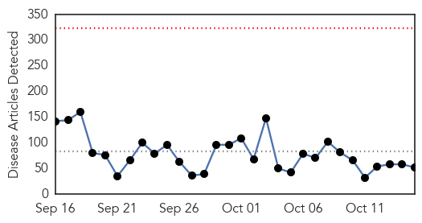
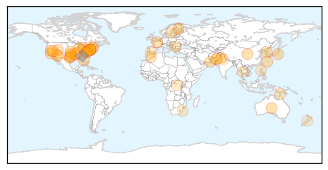

30 Day Trends
Web: 0 alerts, 0 warnings
Twitter: 1 alerts, 0 warnings
Top Articles:
- 0.980
- Fourth case of enterovirus confirmed
- 0.973
- Flu season could be harsher this year, experts say
- 0.972
- Get Healthy Carson City: It’s time to drive through to combat the flu
- 0.956
- Dr. Oz: Enterovirus killed two children and Martina McBride's healthy cookbook
- 0.942
- Virus is no reason for panic, medical officials say
- 0.921
- Arkansas delaying community flu shot clinics
- 0.917
- Chicago Tribune
- 0.917
- Chicago Tribune
- 0.917
- Chicago Tribune
- 0.917
- Chicago Tribune
- 0.917
- Chicago Tribune
- 0.917
- Chicago Tribune
- 0.917
- Chicago Tribune
- 0.917
- Chicago Tribune
- 0.917
- Chicago Tribune
- 0.917
- Chicago Tribune
- 0.917
- Chicago Tribune
- 0.917
- Chicago Tribune
- 0.917
- Chicago Tribune
- 0.917
- Chicago Tribune
- 0.897
- Health officials probing death of Arizona boy for possible enterovirus
- 0.867
- Rising health concerns of IDPs
- 0.866
- Obama promises more aggressive response to Ebola fears in United States
- 0.866
- UAE says isolates passenger from Liberia for Ebola checks
- 0.848
- 65 villagers fall ill, doc blames contaminated water supply
- 0.787
- West Milford takes enterovirus precautions due to suspected, unconfirmed case
- 0.783
- News, Weather, Sports, Breaking News
- 0.756
- HealthCare Partners Nevada to Host Flu Shot Clini
- 0.715
- Tuberculosis cluster: Torres Strait islanders 'kept in the dark' about Yam Island cases
- 0.698
- Three million Europeans catch infections in hospital annually
- 0.695
- Bluetongue Persisting in Balkans, Greece
- 0.676
- Student's reported illness prompts Peoria school cleaning
- 0.657
- Symptoms, Treatment and Prevention
- 0.650
- Koppel and Gordon: Learn, don’t blame, after Dallas hospital’s Ebola diagnostic failure
- 0.646
- Update: Students, Faculty Tested for TB at Thaxton ES
- 0.635
- AIDS scientists optimistic of AIDS cure, for some
- 0.622
- Adena focuses on hand hygiene to protect staff, patients
- 0.621
- Bohol Earthquake: One year on - Philippines
- 0.617
- World's first malaria vaccine may hit markets by 2015
- 0.588
- Pak key to anti-polio campaign: WHO
- 0.579
- Sunday Morning News: State Spending Millions On Ebola Defense
- 0.570
- WCAX.COM Local Vermont News, Weather and Sports-
- 0.560
- Assessing BVD risk
- 0.559
- MPI releases list of potential food poisoning sources
- 0.559
- MPI releases list of potential food poisoning sources
- 0.552
- Test results into gastro bug revealed
- 0.551
- Government Places Andalusia in Bluetongue Lock Down
- 0.546
- Experts question new TB test, say could lead to drug resistance
- 0.535
- Scientists say baby born with dreaded HIV ailment miraculously cured
- 0.508
- Orlando, FL Residents Suffering from Gum Disease Are Encouraged to Seek Treatment through Laser Gum Surgery with Drs. Richard Chace, Jr., Rodney Horvat and Scott G. Cohen
Showing top 50 articles...
Top Tweets:
- 0.647
- Case numbers refer to the number of people who have been confirmed to have EV-D68 infection.
- 0.606
- siento que soy 24/7,Necesito parar e irme de vaca de la uni, del trabajo y de las responsabilidades.. Excepto de Mahya no pudiese soportarlo
- 0.558
- Desalojan a vendedores ubicados en los alrededores del Hospital de Clínicas: Entre la mañana de ayer martes ... http://t.co/JkUgcQKptO
- 0.543
- .@itsmepanda1 Flu activity often begins increasing in Oct, peaking between Dec. & Feb. Getting a flu vax before flu activity begins is best
Web/News Articles
Tweets

Article Locations
Article Confidences